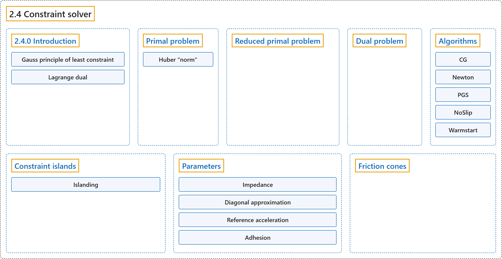

2.4 Constraint solver
Classification

Glossary
| Term | Definition | 中文翻译 | Source |
|---|---|---|---|
| 2.4 Constraint solver 约束求解器 |
(context) "First, the constraint forces are defined as the unique global solution to a convex optimization problem." | （语境）首先，约束力被定义为一个凸优化问题的唯一全局解。 | Google DeepMind, n.d., "Constraint solver", para. 1 |
| 2.4.0 Introduction 介绍 |
(No definition) | （无定义） | Google DeepMind, n.d., "Constraint solver" |
| Gauss principle of least constraint 高斯最小约束原理 |
(context) "The primal formulation is based on a generalization of the Gauss principle of least constraint." | （语境）原问题的表述基于高斯最小约束原理的一种推广。 | Google DeepMind, n.d., "Constraint solver", para. 3 |
| Lagrange dual 拉格朗日对偶 |
"The dual is a convex optimization problem over constraint forces, which also play the role of Lagrange multipliers for the primal problem." | 对偶问题是一个关于约束力的凸优化问题，这些约束力同时也充当原问题的拉格朗日乘子。 | Google DeepMind, n.d., "Constraint solver", para. 2 |
| Primal problem 原问题 |
"We first formulate the optimization problem whose solution yields the constrained acceleration" | 我们先写出其解给出受约束加速度的优化问题 | Google DeepMind, n.d., "Primal problem", para. 1 |
| Huber “norm” Huber“范数” |
"The Huber “norm” is based on the Huber function from robust statistics: it is a quadratic around zero, and transitions smoothly to a linear function when the absolute value of the argument crosses a threshold – in this case given by the friction loss parameters." | Huber“范数”基于稳健统计中的 Huber 函数：它在零附近是二次的，当自变量的绝对值越过某个阈值（这里由摩擦损失参数给出）时，平滑地过渡为线性函数。 | Google DeepMind, n.d., "Primal problem", para. 5 |
| Reduced primal problem 约化原问题 |
"It turns out that the primal problem can be reduced to unconstrained optimization over accelerations." | 事实证明，原问题可以约化为关于加速度的无约束优化。 | Google DeepMind, n.d., "Reduced primal problem", para. 1 |
| Dual problem 对偶问题 |
"We then transform the primal problem over accelerations into its Lagrange dual. The dual is a convex optimization problem over constraint forces, which also play the role of Lagrange multipliers for the primal problem." | 然后把关于加速度的原问题转换为它的拉格朗日对偶。对偶问题是一个关于约束力的凸优化问题，约束力同时充当原问题的拉格朗日乘子。 | Google DeepMind, n.d., "Constraint solver", para. 2 |
| Algorithms 算法 |
"Here we describe the numerical algorithms (or “solvers”) for solving the above convex optimization problems." | 这里介绍求解上述凸优化问题的数值算法（即“求解器”）。 | Google DeepMind, n.d., "Algorithms", para. 1 |
| CG 共轭梯度法 |
"This algorithm uses the non-linear conjugate gradient method with the Hager-Zhang formula." | 该算法使用带 Hager-Zhang 公式的非线性共轭梯度法。 | Google DeepMind, n.d., "Algorithms", item 1 |
| Newton 牛顿法 |
"This algorithm implements the exact Newton method, with analytical second-order derivatives and Cholesky factorization of the Hessian." | 该算法实现精确的牛顿法，使用解析二阶导数和 Hessian 矩阵的 Cholesky 分解。 | Google DeepMind, n.d., "Algorithms", item 2 |
| PGS 投影高斯-赛德尔法 |
"Unlike gradient-based methods which improve the solution along oblique directions, Gauss-Seidel works on one scalar component at a time, and sets it to its optimal value given the current values of all other components." | 与沿斜方向改进解的基于梯度的方法不同，高斯-赛德尔法每次处理一个标量分量，在其他所有分量取当前值的条件下把它设为最优值。 | Google DeepMind, n.d., "Algorithms", item 3 |
| NoSlip 无滑移后处理 |
"This is not a standalone solver but a post-processing step, enabled by setting noslip_iterations to a positive value in option." | 它不是独立的求解器，而是一个后处理步骤，通过在 option 中把 noslip_iterations 设为正值来启用。 | Google DeepMind, n.d., "Algorithms", item 4 |
| Warmstart 热启动 |
"Before solving, the solver warmstarts the constraint forces from the previous time step." | 在求解之前，求解器用上一个时间步的约束力进行热启动。 | Google DeepMind, n.d., "Algorithms", item 5 |
| Constraint islands 约束岛 |
"A constraint island is a disjoint sub-graph which can be solved for independently, because constraint forces cannot propagate between islands." | 约束岛是一个可以独立求解的不相交子图，因为约束力不能在岛之间传播。 | Google DeepMind, n.d., "Constraint islands", para. 1 |
| Islanding 分岛 |
"Constraint island discovery and construction (“islanding”) involves finding these disjoint subgraphs and reordering both the DOFs and constraints to make them memory-contiguous." | 约束岛的发现与构建（“分岛”）包括找出这些不相交子图，并对自由度和约束重新排序，使它们在内存中连续。 | Google DeepMind, n.d., "Constraint islands", para. 1 |
| Parameters 参数 |
"To summarize, the constraint behavior is determined by three per-constraint quantities" | 总之，约束行为由每个约束的三个量决定 | Google DeepMind, n.d., "Parameters", para. 9 |
| Impedance 阻抗 |
"It is then natural to introduce a model parameter which directly controls the interpolation. We call this parameter impedance and denote it" | 于是很自然地引入一个直接控制这种插值的模型参数。我们把这个参数称为阻抗，记作 | Google DeepMind, n.d., "Parameters", para. 3 |
| Diagonal approximation 对角近似 |
"The approximation (which is limited to the diagonal) is constructed using the “end-effector” inertias of all bodies, joints and tendons when the model is in the initial configuration mjModel.qpos0." | 这种近似（仅限于对角线）用模型处于初始构型时所有刚体、关节和肌腱的“末端执行器”惯量构造，即 mjModel.qpos0。 | Google DeepMind, n.d., "Parameters", para. 4 |
| Reference acceleration 参考加速度 |
"Next we explain how the reference acceleration is computed. As already mentioned, we use a spring-damper model parameterized by damping and stiffness coefficients element-wise:" | 接下来说明参考加速度如何计算。如前所述，我们使用一个逐元素地由阻尼系数和刚度系数参数化的弹簧阻尼模型： | Google DeepMind, n.d., "Parameters", para. 7 |
| Adhesion 黏附 |
"the feasible force set is the friction cone translated down the contact normal" | 可行力集合是沿接触法线向下平移后的摩擦锥 | Google DeepMind, n.d., "Parameters", item 2 |
| Friction cones 摩擦锥 |
"As explained above, MuJoCo allows both elliptic friction cones and pyramidal approximations to them; the selected solver determines which type of friction cone is used." | 如前所述，MuJoCo 允许椭圆摩擦锥以及对它的棱锥近似；所选求解器决定使用哪种摩擦锥。 | Google DeepMind, n.d., "Friction cones", para. 1 |
References
Google DeepMind. (n.d.). Computation. MuJoCo Documentation (Version 3.17.0). Retrieved October 31, 2026, from https://mujoco.readthedocs.io/en/stable/computation/index.html